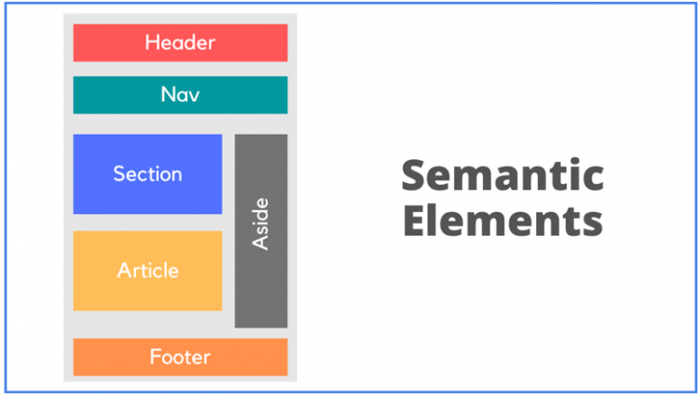
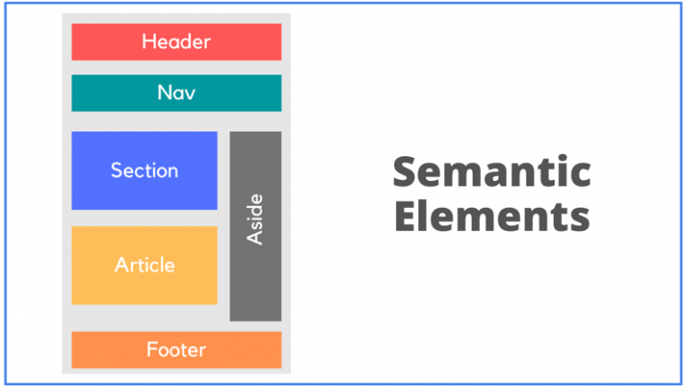

Understanding Semantic HTML
Semantic HTML is a way to write HTML that describes a meaning of the content...
Welcome to my personal blog! This is where I share my thoughts about Web Development and Cybersecurity, and just about the industry as a whole!
Semantic HTML is a way to write HTML that describes a meaning of the content...
The CSS Box Model is made up of four parts: the inner most layer which is called the content layer, then you have the padding layer which forms a sort of invisiblle boundary around the content layer, that separates the content to a set degree from the third layer which is the border. The border sets a certain visible bounday around the box that you are creating. Then you have the margin, or the fourth layer, which separates the rest of the box from the other content on the page.
Adding images, videos and audio files to your webpage enhances the user experience.
Embedding a relevant YouTube video to your content can provide a more interactive and engaging experience for your users. Or you can upload your own, here! For this example, I'm going to embed a video that I found to be interesting and helpful in my own life!